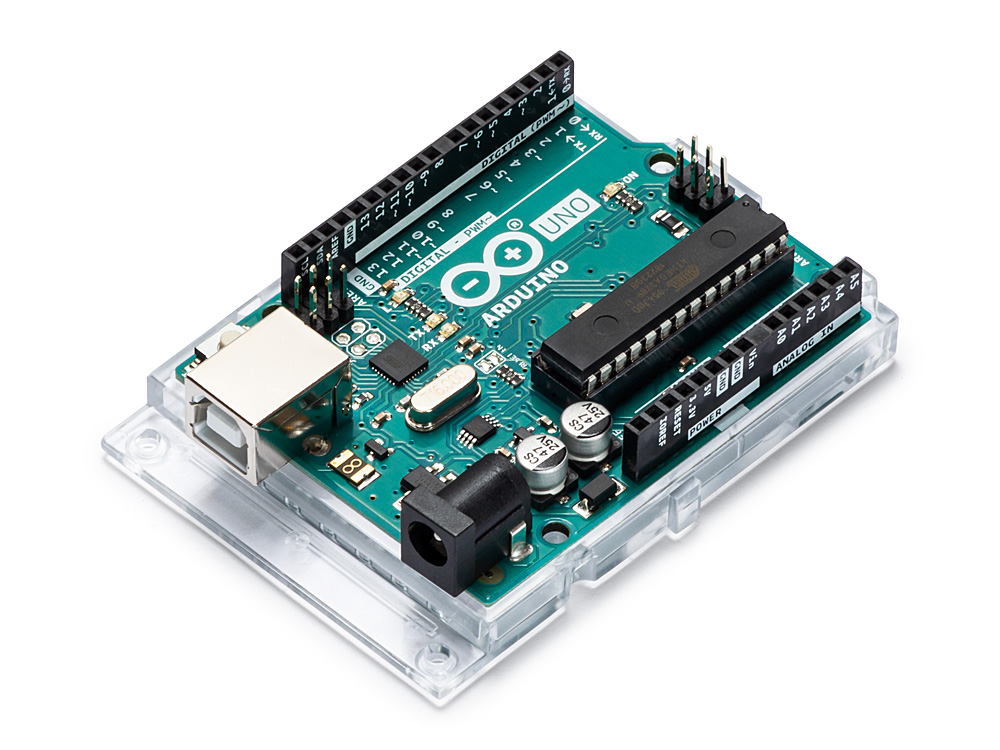

Project Idea
Overview
I would like to make a voice sensor system using raspberry pi or Arduino that can turn off my room lights using certain words created by me. I want to be able to say lights off and my lights turn off and when I want my light to be on and I say lights turn on they will turn on. Either it would be voice-activated, or Bluetooth activated via my phone so I can turn off my lights while lying in bed or downstairs. But mostly my aim for this project would be more vocal and the Bluetooth as a backup if anything goes wrong or if the sensors or not picking up my voice.
Motivation
I got the motivation to make this my project idea while I was lying in bed and I was too lazy to get out and turn off the light and I was wondering if there was a cheap alternative way where I could learn and make myself a system here, I will be able to tell my light to turn on and turn off on the command of my voice. Since high school I always wanted to create something of my own, the first thing I created was a car using Arduino which whenever it sensed a wall it would stop. After that, I always wanted to create different things but never got the chance to do so.
Description
Imagine you just got into bed and into your blankets but then you realise that you forgot to turn off your light, so you are forced to go back out of your blanket just to turn off the light. Would not life be so much simpler if there was a way to turn off the light maybe using your voice by sending commands to it. Commands will be sent through Arduino which then the Arduino will send the command to raspberry pi to execute the command This project is a tangible product as you can use it for your daily use and if I have the money, I can make multiple of them and maybe sell it. The project will begin with me gathering all the resources and programs required for it to work so that this project is successful. I would also need to try and understand how the raspberry pi or the Arduino functions and how I can use it the most efficiently and beneficially. I would be able to choose and control if I want my led lights to be on or off or If I would want my room light to be on or off. I will be using ready-to-go voice control software called Voice Command or equivalent software that will allow me to assign keywords that execute the program to send information and provide feedback to what exactly what action it performs and send a notification to the device. I would then be needing to use a software called RCSwitch-Pi so I can get my switches working and making it function. I would then need to learn languages such as python and shell to code my raspberry pi to the things I need it to do such as recording my voice and installing the dependencies. Once I have done the previous step, I would need to start recording my voice and testing if it can receive and function how I want it to function without any errors. After I have completed all those steps, I would need to connect my Arduino to the which I will use to record my voice and connect it to my Raspberry Pi using pins and 433 MHz switches. Once it is all connected, I would need to run tests on it to check for bugs and debug it and see if there is anything wrong with it. This will allow me to fix any issues that might be occurring and resolve them so that when I put them into practical use, I will not need to take them down or edit them later down the track. In the end, I would put it in my room and enjoy my new project. The product's voice command system is going to be similar to iron man Jarvis where he asks her to things but instead in this project all I am doing is turning on different lights in my room and turning them off. This project is a great start for a beginner like me as it does not seem to be complicated to make and is something achievable and at the same time, I will be learning.
Tools and Technologies
I will be using tools such as a raspberry pi which is a small computer that can be plugged into a monitor and teach me and others programming. While the Arduino is bigger than the raspberry pi and works differently to it as it has different software and has different functions compared to the raspberry pi. Both might be used in this project. A USB microphone to emit my voice and tell the Raspberry pi what to do and be able to control the lights in my room. A radio transmitter, switches, and speakers. I would then need to download a program WiringPI.I would also need to be able to download the voice control software so I can control my lights.
Skills Required
The skills that is required for me to start making my voice-controlled light is being able to program in either python or shell as this is the main programming language that these two devices use and without these skills, I will not be able to do much. After learning these skills, I would be able to create different projects in the future and possibly expand my knowledge of the device. I would also need the skills to be able to use the Raspberry pi efficiently so I can make minimal errors and work at a good pace. These skills will benefit me for future projects as well if I decide to make different things in the future.
Outcome
The outcome of this project will be a working device that will allow me to control all my room lights using my voice from the comfort of my bed. I would also gain more knowledge and skills in python and shell and being able to use tools such as the microphone to transmit my voice and radio transmitter to be able to make things work. I would also be able to understand the Arduino much better as they are very similar to each other and function very similarly but each one of them is used differently to achieve similar goals.
